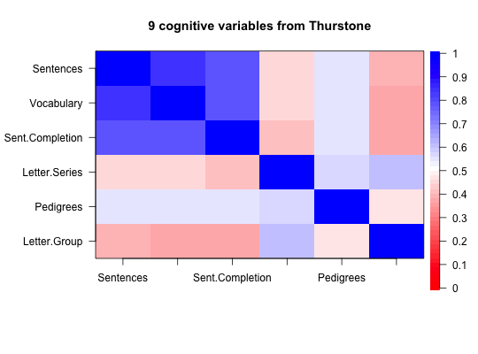

Create an image plot for a correlation or factor matrix
Correlation matrices may be shown graphically by using the image function to emphasize structure. This is a particularly useful tool for showing the structure of correlation matrices with a clear structure. Partially meant for the pedagogical value of the graphic for teaching or discussing factor analysis and other multivariate techniques.
corPlot(r,numbers=FALSE,colors=TRUE,n=51,main=NULL,zlim=c(-1,1), show.legend=TRUE, labels=NULL,n.legend=10,keep.par=TRUE,select=NULL, pval=NULL, cuts=c(.001,.01),scale=TRUE,cex,MAR,upper=TRUE,diag=TRUE, symmetric=TRUE,stars=FALSE, adjust="holm",xaxis=1, xlas=0,ylas=2,...) cor.plot(r,numbers=FALSE,colors=TRUE,n=51,main=NULL,zlim=c(-1,1), show.legend=TRUE, labels=NULL,n.legend=10,keep.par=TRUE,select=NULL, pval=NULL, cuts=c(.001,.01),scale=TRUE,cex,MAR,upper=TRUE,diag=TRUE, symmetric=TRUE,stars=FALSE,adjust="holm",xaxis=1,xlas=0,ylas=2,...) cor.plot.upperLowerCi(R,numbers=TRUE,cuts=c(.001,.01,.05),select=NULL, main="Upper and lower confidence intervals of correlations",...)
Arguments
| r | A correlation matrix or the output of |
|---|---|
| R | The object returned from |
| numbers | Display the numeric value of the correlations. Defaults to FALSE. |
| colors | Defaults to TRUE and colors use colors from the colorRampPalette from red through white to blue, but colors=FALSE will use a grey scale |
| n | The number of levels of shading to use. Defaults to 51 |
| main | A title. Defaults to "correlation plot" |
| zlim | The range of values to color -- defaults to -1 to 1 |
| show.legend | A legend (key) to the colors is shown on the right hand side |
| labels | if NULL, use column and row names, otherwise use labels |
| n.legend | How many categories should be labelled in the legend? |
| keep.par | restore the graphic parameters when exiting |
| pval | scale the numbers by their pvals, categorizing them based upon the values of cuts |
| cuts | Scale the numbers by the categories defined by pval < cuts |
| scale | Should the size of the numbers be scaled by the significance level? |
| select | Select the subset of variables to plot |
| cex | Character size. Should be reduced a bit for large numbers of variables. |
| MAR | Allows for adjustment of the margins if using really long labels or big fonts |
| upper | Should the upper off diagonal matrix be drawn, or left blank? |
| diag | Should we show the diagonal? |
| symmetric | By default, if given a non-symmetric matrix, we find the correlations using pair.wise complete and then show them. If wanting to display a non-symmetric matrix, then specify that symmetric is FALSE |
| stars | For those people who like to show the 'significance' of correlations by using magic astricks, set stars=TRUE |
| adjust | If showing significance, should we adjust for multiple tests? The default is to show zero order probabilities below the diagonal and adjust these using the 'holm' correction above the diagonal. Use adjust = "none" if no adjustment is desired. |
| xlas | Orientation of the x axis labels (1 = horizontal, 0, parallel to axis, 2 perpendicular to axis) |
| ylas | Orientation of the y axis labels (1 = horizontal, 0, parallel to axis, 2 perpendicular to axis) |
| xaxis | By default, draw this below the figure. If xaxis=3, then it wil be drawn above the figure |
| ... | Other parameters for axis (e.g., cex.axis to change the font size, srt to rotate the numbers in the plot) |
Details
When summarizing the correlations of large data bases or when teaching about factor analysis or cluster analysis, it is useful to graphically display the structure of correlation matrices. This is a simple graphical display using the image function.
The difference between mat.plot with a regular image plot is that the primary diagonal goes from the top left to the lower right. zlim defines how to treat the range of possible values. -1 to 1 and the color choice is more reasonable. Setting it as c(0,1) will lead to negative correlations treated as zero. This is advantageous when showing general factor structures, because it makes the 0 white.
The default shows a legend for the color coding on the right hand side of the figure.
Inspired, in part, by a paper by S. Dray (2008) on the number of components problem.
Modified following suggestions by David Condon and Josh Wilt to use a more meaningful color choice ranging from dark red (-1) through white (0) to dark blue (1). Further modified to include the numerical value of the correlation. (Inspired by the corrplot package). These values may be scaled according the the probability values found in cor.ci or corr.test.
Unless specified, the font size is dynamically scaled to have a cex = 10/max(nrow(r),ncol(r). This can produce fairly small fonts for large problems. The font size of the labels may be adjusted using cex.axis which defaults to one.
By default cor.ci calls cor.plot.upperLowerCi and scales the correlations based upon "significance" values. The correlations plotted are the upper and lower confidence boundaries. To show the correlations themselves, call corPlot directly.
If using the output of corr.test, the upper off diagonal will be scaled by the corrected probability, the lower off diagonal the scaling is the uncorrected probabilities.
If using the output of corr.test or cor.ci as input to cor.plot.upperLowerCi, the upper off diagonal will be the upper bounds and the lower off diagonal the lower bounds of the confidence intervals.
To do multiple corPlot on the same plot, specify that show.legend=FALSE and keep.par=FALSE. See the last examples.
References
Dray, Stephane (2008) On the number of principal components: A test of dimensionality based on measurements of similarity between matrices. Computational Statistics \& Data Analysis. 52, 4, 2228-2237.
See also
fa, mat.sort, cor.ci, corr.test.
Examples
cor.plot(Thurstone,main="9 cognitive variables from Thurstone")#just blue implies positive manifold #select just some variables to plot cor.plot(Thurstone, zlim=c(0,1),main="9 cognitive variables from Thurstone",select=c(1:3,7:9))#now show a non-symmetric plot cor.plot(Thurstone[4:9,1:3], zlim=c(0,1),main="9 cognitive variables from Thurstone",numbers=TRUE,symmetric=FALSE)#Two ways of including stars to show significance #From the raw data corPlot(sat.act,numbers=TRUE,stars=TRUE)#from a correlation matrix with pvals cp <- corr.test(sat.act) #find the correlations and pvals r<- cp$r p <- cp$p corPlot(r,numbers=TRUE,diag=FALSE,stars=TRUE, pval = p,main="Correlation plot with Holm corrected 'significance'")#now red means less than .5 corPlot(mat.sort(Thurstone),TRUE,zlim=c(0,1), main="9 cognitive variables from Thurstone (sorted by factor loading) ")#scale by raw and adjusted probabilities rs <- corr.test(sat.act[1:200,] ) #find the probabilities of the correlations corPlot(r=rs$r,numbers=TRUE,pval=rs$p,main="Correlations scaled by probability values")#Show the upper and lower confidence intervals cor.plot.upperLowerCi(R=rs,numbers=TRUE)#do multiple plots #Also show the xaxis option op <- par(mfrow=c(2,2)) corPlot(ability,show.legend=FALSE,keep.par=FALSE,upper=FALSE) f4 <- fa(ability,4) corPlot(f4,show.legend=FALSE,keep.par=FALSE,numbers=TRUE,xlas=3) om <- omega(ability,4) corPlot(om,show.legend=FALSE,keep.par=FALSE,numbers=TRUE,xaxis=3)par(op)